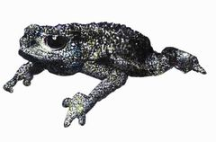
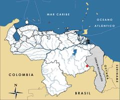

Oreophrynella nigra
| Sapito Rugoso del Kukenan | |
|---|---|
|  | |
| Riesgo de extinción | |
 Vulnerable (UICN) | |
| Clasificación científica | |
| Reino: | Animalia |
| Filo: | Chordata |
| Clase: | Amphibia |
| Orden: | Anura |
| Familia: | Bufonidae |
| Género: | Oreophrynella |
| Especie: | Oreophrynella nigra |
| Nombre binomial | |
|
Oreophrynella nigra Señaris, Ayarzaguena et Gorzula, 1994 | |
| Distribución | |
|
 Mapa de distribución de Oreophrynella nigra | |
Contenido
Información de Evaluación
- Categoría y Criterio Regional: Vulnerable D2
- Fecha de Evaluación Regional: 2015
- Evaluadores: Jesús Morales-Campos y Ariany García-Rawlins
- Categoría y Criterio Global: Vulnerable D2
Justificación
Evaluaciones Previas
1999: No Evaluado (NE)
2008: Vulnerable (VU)
Información General
Nombres comunes
Sapito rugoso del Kukenán, sapito tepuyano, sapito del Kukenán, Kukenan tepui toad, Kukenan bush toad.
Notas taxonómicas
Sinónimos
Descripción
Es un sapito pequeño, mide alrededor de los 2,5 cm. Su dorso y vientre presentan una coloración negra uniforme. Se caracteriza por los tubérculos y gránulos de su piel dorsal, también presentes en los otros miembros del género y que les ha valido el nombre común de «sapitos rugosos». En el caso de Oreophrynella nigra, los tubérculos son redondeados, grandes y medianos, más altos y puntiagudos en la cabeza (aunque de menor tamaño que en Oreophrynella quelchii), en una densidad media que deja ver al fondo la piel lisa. Su biología es similar a la de otras especies del género, y entre sus aspectos ecológicos y comportamientos más interesantes, destaca su probable reproducción comunal con cuidado parental, la cual no ha sido totalmente comprobada. Así mismo, se distingue por su comportamiento defensivo al enrollarse como una bolita y rodar cuando se encuentra amenazado. Observaciones en campo reportan altas congregaciones poblacionales, como una «ciudad» de 102 sapitos y 321 huevos en aproximadamente un metro cuadrado, localizada en las islas de vegetación del Kukenán-tepui y dentro de una intrincada red de túneles entre las raíces de las plantas. Se especula que estos túneles podrían haber sido construidos por los machos o, por el contrario, son sitios de refugio o incubación de especies de miriápodos, aprovechados y utilizados también por los sapitos tepuyanos. Las hembras ponen entre ocho y quince huevos y, en algunos nidos se han encontrado hasta 35 huevos. Poseen un nicho trófico estrecho, con una dieta limitada principalmente a termitas, hormigas y coleópteros (McDiarmid y Gorzula 1989, Mägdefrau et al. 1992, Señaris et al. 1994).
Distribución
Oreophrynella nigra habita en las cimas del Kukenán-tepui y del Yuruaní-tepui, a elevaciones entre los 2300 y 2700 m, ubicados en el sector oriental del parque nacional Canaima, en el estado Bolívar. Si bien la mayoría de las especies del género Oreophrynella son endémicas de la cumbre de un solo tepuy, O. nigra y O. quelchii, son las únicas que se distribuyen en las cumbres de más de un tepuy (Señaris et al. 1994, MacCulloch et al. 2007, Kok et al. 2012).
- Sistema: Terrestre, Dulceacuícola
- Bioregión:
- Intervalo altitudinal (m): 2300-2700
- Endémica: Sí
Situación
Si bien parece tratarse de una especie común en las cimas del Kukenán y del Yuruaní, se requieren más datos para establecer y determinar su estatus poblacional. Estimaciones sobre abundancia relativa y densidad han generado valores de un ejemplar por cada 10 m2, destacándose en sectores particulares donde se congregan grandes números, como el caso mencionado de las «ciudades» de sapitos con más de 100 individuos. De acuerdo con los hábitats donde se ha detectado la especie, su distribución potencial máxima abarcaría unos 25 km2, fragmentada entre los 21 km2 de la cima del Kukenán y los cuatro kilómetros cuadrados del Yuruaní (McDiarmid y Gorzula 1989, Solano 1989). En el ámbito internacional, tanto en la Evaluación Global de los Anfibios, como en la lista roja de la Unión Internacional para la Conservación de la Naturaleza se le ha inscrito en la categoría Vulnerable de extinción (IUCN 2014).
- EOO (km2): 25
- AOO (km2): <20
- Tendencia Poblacional: Estable
Amenazas
No se conocen amenazas concretas sobre esta especie, pero debido a su restringida y fragmentada distribución, expertos consideran que calificaría para la lista de especies amenazadas de extinción. Entre las amenazas potenciales a su existencia se incluyen catástrofes naturales como sequías, inundaciones e incendios ordinarios de la naturaleza. Su condición aparentemente social, la haría de modo especial muy expuesta a reducciones de su tamaño poblacional, sobre todo ante posibles epidemias como la quitridiomicosis. La cumbre del Kukenán-tepui es un ecosistema muy antiguo y frágil que es visitado por turistas, y aunque no se ha identificado como una amenaza directa para este sapito, la introducción de especies exóticas y patógenas es muy posible.
Conservación
A pesar de no contarse con medidas explícitas para su conservación, su hábitat está en buen estado y protegido por el parque nacional Canaima. Además, todos los sistemas montañosos de la Guayana venezolana se encuentran amparados por el decreto Monumentos Naturales «Tepuyes», incluyendo al Yuruaní-tepui y al Kukenán-(Matauí)-tepui. Se recomienda ampliar los estudios sobre aspectos biológicos y ecológicos de la especie, especialmente en cuanto a comportamientos reproductivos y sociales. Se debe realizar el seguimiento de las poblaciones, así como la evaluación de las amenazas, incluyendo potenciales impactos del turismo sobre el sapito del Kukenán.
Autorías
Autores originales
Josefa Celsa Señaris y Fernando J. M. Rojas-Runjaic
Colaboradores
Ilustrador
Ximenamaria Rausseo
Referencias
- IUCN (2014). The IUCN Red List of Threatened Species. Version 2014.3. Accesible en www.iucnredlist.org.
- Kok, P. J. R., MacCulloch, R. D., Means, D. B., Roelants, K., Van Bocxlaer, I. y Bossuyt, F. (2012). Low genetic diversity in tepui summit vertebrates. Current biology 22(15).
- MacCulloch, R., Lathrop, A., Reynolds, B., Señaris, J. C. y Schneider, G. (2007). Herpetofauna of Mount Roraima, Guiana Shield Region, northeastern South America. Herpetological Review 38: 24-30.
- Mägdefrau, H., Mägdefrau, K. y Vernet P., P. D. (1992). Estudios herpetológicos en los tepuyes del complejo Roraima (Estado Bolívar, Venezuela). Informe Técnico. 30.
- McDiarmid, R. y Gorzula, S. (1989). Aspects of the reproductive ecology and behavior of the tepui toads, genus Oreophrynella (Anura, Bufonidae). Copeia 1989 2: 445-451.
- Rodríguez, J. P. y Rojas-Suárez, F. (1999). Libro Rojo de la Fauna Venezolana, segunda edición. PROVITA, Fundación Polar. Caracas. 444 pp.
- Rodríguez, J. P. y Rojas-Suárez, F. (Eds.) (2008). Libro Rojo de la Fauna Venezolana, tercera edición. Provita y Shell Venezuela, S. A. Caracas, Venezuela. 364 pp.
- Señaris, J. C., Ayarzagüena, J. y Gorzula, S. (1994). Los sapos de la familia Bufonidae (Amphibia: Anura) de las tierras altas de la Guayana Venezolana: descripción de un nuevo género y tres especies. Publicaciones de la Asociación Amigos de Doñana 3: 1-37.
- Señaris, J. C. y Rojas-Runjaic, F. J. M. (2015). Sapito rugoso del Kukenán, Oreophrynella nigra. En: J.P. Rodríguez, A. García-Rawlins y F. Rojas-Suárez (eds.) Libro Rojo de la Fauna Venezolana. Cuarta edición. Provita y Fundación Empresas Polar, Caracas, Venezuela. Recuperado de: animalesamenazados.provita.org.ve/content/sapito-rugoso-del-kukenan Vie, 13/04/2018 - 09:48
- Solano, H. (1989). Aspectos de la biología de Oreophrynella quelchii (Boulenger) en los tepuyes venezolanos. Acta Biológica Venezuélica 12(3-4): 55-63.